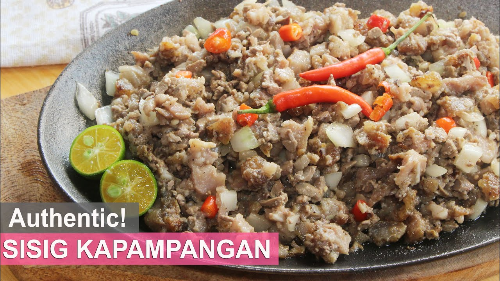

Team Pogi
Kapampangan Sisig

WHAT IS SISIG?
Sisig is probably the most famous Kapampangan dish in the Philippines that is also gaining a lot of attention worldwide. You would easily find it in the menus of most restaurants, bars, or even common small food stalls called, Carinderias.
The Sisig that most people know is a modern-day version of what it was in earlier years. The Kapampangan word 'sisig' actually means to snack on something sour (normally unripe fruit in vinegar dressing). It was originally a very sour dish because of all the vinegar and/or calamansi juice in it. It was not until later that pork or other meat was used.